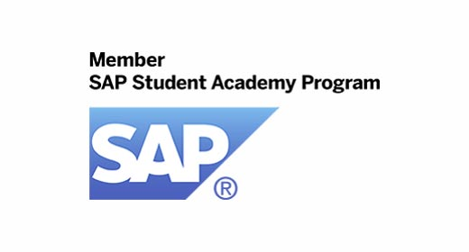

NORTH INDIAN UNIVERSITY
ThinkBIG
LATEST NEWS!
LPU strikes deals with SAP, Oracle etc to offer free industry training to students!

NIU STUDENTS TO BE TRAINED ON SAP BUSINESS SUITE
NIU STUDENTS TO BE TRAINED ON SAP BUSINESS SUITE
A training that costs over Rs. 3 Lac will be provided to LPU students of B.Tech., BCA, MCA, MBA, M.Com., BBA (Hons.), B.Com (Hons.), etc. completely free. Students can get training in SAP Business Process Modules, leading to SAP Consultant Certification.

NOW GET ORACLE CERTIFICATION TRAINING AT NIU
NIU students can avail training in Oracle's popular tracks (BI, Big Data and & IoT) leading to OCA (Oracle Certified Administrator) certification. This training usually costs over Rs. 1.5 Lac but will be provided for free to NIU students.
TENS OF OTHER INDUSTRY CERTIFICATIONS ALSO OFFERED!
At NIU, students can take classes in industry collaborated programmes and laboratories. From CISCO to Cadence, many companies have established their centres of excellence to enhance student employability.